7 Çullukgiller
Sürmeli Kervançulluğu
Numenius phaeopus, Whimbrel
Lokal olarak nispeten az sayılarda görülen bir geçit türüdür.
Çoğunluğu, önemli güney-kuzey deltalarını ve İç Anadolu’nun geniş playa göllerini kullanarak ülkenin orta bölgelerinden geçmektedir (Kasparek, 1990a, 1992a). İlkbahar göçü mart sonu ve haziran başı arasındadır, medyan tarih 23 Nisan olarak belirlenmiştir Kasparek (1990a). Sonbahar göçü temmuz başından ekim sonuna kadar sürer, ağustos ve eylülde zirve yapar, medyan tarih 29 Ağustostur. Kayıtların çoğu yalnız bireyler ya da beş bireyden küçük gruplara aittir ancak hem geçmişte hem de günümüzde Doğu Karadeniz, Ege ve Akdeniz’de 20-30 bireylik gruplar kaydedilmiştir. Mart ortası ile 27 Nisan 1990 tarihleri arasında Çukurova’dan toplam 54 birey (Kivit, Nijmeijer & Ovaa, 1994) ve 29 Mart ile 7 Haziran 1992 tarihleri arasında Kızılırmak Deltası’ndan 70 birey (Hustings & Dijk, 1994) geçmiştir. Aşağıdaki günlük toplamlar da önemlidir: 25 Eylül 1981’de Göksu Deltası’nda 20 birey ve 7-10 Kasım 1983’te Büyük Menderes Deltası’nda 40 birey (Kasparek, 1990a). Geçişin çoğu gece olduğu için neredeyse kesinlikle var olduğundan daha az sayıda kaydedilmektedir. Kışın nadiren kaydedilmiştir.
Krüper (1875) ve Hartlaub kışın İzmir’de bulunduğunu belirtmiş, oysa Kasparek (1990a), bu kuşların İnce Gagalı Kervançulluğu ile karıştırıldığından şüphelenmiştir.
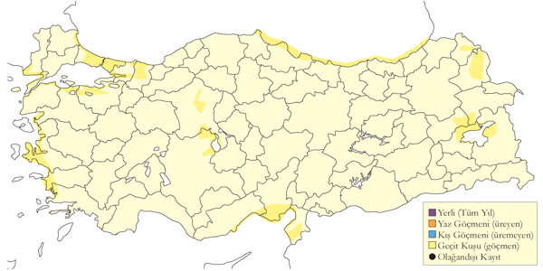
Üreme
Türkiye’de yuvalamaz.
Alttürler ve Sınıflandırma
Türkiye’de nominat alttürü bulunur.
İnce Gagalı Kervançulluğu
Numenius tenuirostris, Slender-billed Curlew
Soyu tükenmiş bir türdür. Eskiden nadir olarak görülen bir geçit türüydü.
Son derece nadir bir geçit türüdür, en son kesinlikle 1986’da kaydedilmiştir. Kayıtlar 10 Temmuz ile 12 Mayıs tarihleri arasındadır, batı ve orta bölgelerde, özellikle iyi gözlem yapılan Akdeniz kıyısındaki deltalarda ve İç Anadolu’daki sığ göllerdeki kayıtların çoğu 1975’ten öncedir. Görünüşe göre, bu tür kaçınılmaz biçimde yok oluşa doğru gitmektedir (Gretton, Yurlov & Boere, 2002). Türkiye’den şu kayıtlar mevcuttur, aksi belirtilmediği sürece hepsi Gretton (1991) ya da BirdLife International veritabanındandır: 19.yy sonlarında ya da 20. yy başlarında muhtemelen İstanbul çevresinden alınan iki örnek (Kirwan, 1997), Aralık 1892’de İstanbul’dan alınan erişkin bir dişi ve 11 Eylül 1895’te İstanbul’un 10 km batısında Makriköy’den (Bakırköy, İstanbul) alınan başka bir dişi vardır ve her ikisi de Alléon koleksiyonunda ve şu anda Sofya Ulusal Doğa Tarihi Müzesi’nde bulunmaktadır (Boev, 2003), 14 Ocak 1967’de Hoyran (Eğirdir) Gölü’nde bir birey, 19 Mart 1967’de Mogan Gölü’nde iki birey ve 23 Mart 1967’de aynı yerde başka bir birey, 26 Mart 1967’de Balıkdamı’nda iki birey, 12 Ağustos 1967’de Sodalı Gölü’nde bir birey, 10 Ekim 1968’de Amik Gölü’nde bir birey, 5 Nisan 1969’da Tekirdağ yakınlarında üç birey, 15 Nisan 1969’da Side’den (Antalya, Akdeniz) batıya doğru giden iki birey, 12 Aralık 1969’da Seyfe Gölü’nde bir birey, 28 Nisan 1970’de Yarma yakınlarında bir birey, 12 Mayıs 1970’de Eber Gölü’nde bir birey, 17 Ocak 1971’de Çivril Gölü’nde bir birey, 25 Ağustos 1971’de Rize yakınlarında bir birey, 28 Ağustos 1973’te Göksu Deltası’nda bir birey, 30 Eylül 1973’te Uluabat Gölü’nde iki birey, 23 Eylül 1979’da Küçük Menderes Deltası’nda iki birey, 5 Ocak 1982’de ve 4 Mart 1985’te Çukurova’da Akyatan Gölü’nde birer birey, 9 Mart 1985’te Göksu Deltası’nda dört birey, 6 Nisan 1986’da Ereğli Sazlığı’nda bir birey, 10 Temmuz 1986’da Göksu Deltası’nda bir birey ve 26 Aralık 1986’da Büyük Menderes Deltası’nda bir birey. Bu kayıtların hepsi için birtakım belgeler mevcuttur. Gretton (1991), 1946, 1947 ve 1951’de İstanbul’un hemen batısında Büyükçekmece’de ve 27 Şubat 1959’da Meriç Deltası’nda (Kumerloeve, 1970a) olmak üzere dört bireyle ilgili kabul edilemeyecek üç kayıt daha listelemiştir (Kumerloeve, 1961; Kirwan, 1997). Ek olarak, 30 Nisan 1986’da Çukurova’dan, 22 Ağustos 1990’da Dalyan Deltası’ndan ve 10 Mayıs 1993’te Kulu Gölü’nden kesin olarak kabul edilemeyecek kayıtlar vardır. Öte yandan, 15 Eylül 1985’te İstanbul Tuzla’da iddia edilen bireyin kervançulluğunun orientalis doğu alttürü olduğu kanıtlanmıştır (Konrad, 1994).
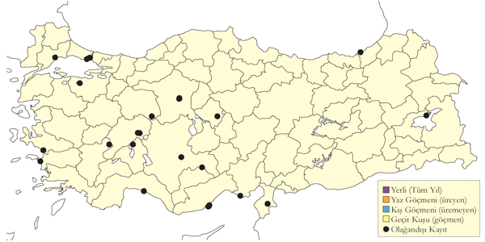
Üreme
Türkiye’de yuvalamaz.
Alttürler ve Sınıflandırma
Monotipik bir türdür.
Kervançulluğu
Numenius arquata, Eurasian Curlew
Yaygın olarak nispeten çok sayıda bulunan geçit türü ve kış konuğudur.
Geçiş, mart ortasında başlar ve en yüksek sayılar nisanın ilk yarısından gözlenir ancak bu dönemde bile küçük gruplar kaydedilir. Çukurova’da ilkbahar 1987’de maksimum 27 birey (Have et al., 1988) ve ilkbahar 1990’da tarafından maksimum 42 birey (Kivit et al., 1994) kaydedilmiştir. Geçişi oldukça güçlü bir şekilde en azından mayıs başına kadar sürer ve ülkenin batı ve orta bölgelerindeki birkaç yerden düzensiz yaz kayıtları vardır. Sonbahar göçü temmuz başında başlar ve bazı yıllarda en azından kasım ortasına kadar sürse de ilkbahar göçüne oranla daha hızlı gerçekleşir. Düzenli olarak 250 bireylik sürülerin kaydedildiği Meriç Deltası bu dönemdeki en önemli konaklama alanları arasındadır.
Kışın, orta sayılarda Marmara, Ege ve Akdeniz bölgelerindeki kıyı alanlarında görülür. En yüksek sayılar Büyük Menderes Deltası’nda kaydedilir; burada Ocak 1971’de 1254 birey sayılmıştır. Zaman zaman bu mevsimde iç kesimlerde de kaydedilir. 1999 ve 2005 yıllarındaki kış ortası sayımlarında sırasıyla 1362 ve 1688 birey sayılmıştır.
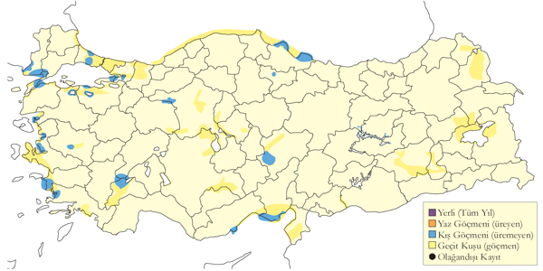
Üreme
Türkiye’de yuvalamaz.
Alttürler ve Sınıflandırma
Bir kısmı nominat arquata alttürüdür. Özellikle son yıllarda yapılan ayrıntılı gözlem ve fotoğrafların neticesinde orientalis alttürü sıkça kaydedilmektedir (Konrad, 1994).
Kıyı Çamurçulluğu
Limosa lapponica, Bar-tailed Godwit
Seyrek olarak az sayıda bulunan geçit türü ve kış konuğudur.
Kayıtların çoğu ana deltalardadır ve daha az sayılarda İç Anadolu’daki büyük sulakalanlarda. İlkbaharda mart ortasından haziran başına kadar kaydedilir, çoğunluğu nisanın ikinci ve dördüncü haftaları arasında geçer. Sonbaharda ağustos başında ekim ortasına kadar görülür, çoğunluğu ağustos sonu ile eylülün ilk yarısında kaydedilir. Nisan 1976’da Büyükçekmece’de (İstanbul) 20 birey, 29 Nisan 1998’de Kızılırmak Deltası’nda 20 birey ile Mayıs 1987 ve Mayıs 1991’de Çukurova deltalarında toplam 14 ve 13 birey kaydedilmiş en yüksek sayılardır. Diğer kayıtların tümü yalnız bireylere ya da on bireye kadar küçük gruplara aittir.
Kışın Ege ve Akdeniz kıyılarında kaydedilir. Şubat 1880’ler (Schrader, 1891), Ocak 1970 ve Ocak 1973’te (OST, 1975) Büyük Menderes Deltası’nda yalnız bireyler, 1 Şubat 2007’de Akyatan Gölü’nde (Çukurova, Akdeniz) 28 bireylik olağandışı bir sürü (Balmer & Betton, 2008) ve 20 Aralık 2003’te Gediz Deltası’nda 10 birey ve 18 Aralık 2004’te aynı yerde iki birey (Balmer & Betton, 2005a) kaydedilmiştir. 1966’da modern kaydetmenin başlamasından önce diğer birkaç nadir kıyı kuşu gibi bu türün de çok az kaydı vardır.
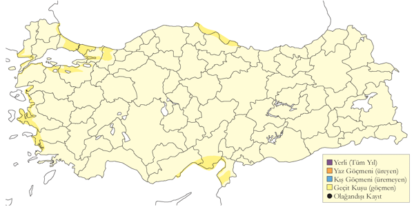
Üreme
Türkiye’de yuvalamaz.
Alttürler ve Sınıflandırma
Türkiye’de nominat alttürü bulunur. Öte yandan, Have et al. (1988) bazılarının daha uzun gagalı doğu ırklarından birine, muhtemelen menzbieri alttürüne dâhil olabileceğinden şüphelenmiştir.
Çamurçulluğu
Limosa limosa, Black-tailed Godwit
Yaygın olarak nispeten çok sayıda bulunan geçit türü, lokal kış konuğudur.
İlkbahar geçişi şubatta başlar ve mayıs sonuna kadar çoğu geçmiş olur. Mart 1970’de Tuz Gölü’nde kaydedilen 1500 birey ve Mart 1990 sonlarında Çukurova’da kaydedilen 3725 birey ilkbaharda kaydedilen en kalabalık sürülerdir. Temmuzdan itibaren tekrar sürü oluşturmaya başlar. 12 Temmuz 1997’de Meriç Deltası’nda kaydedilen 1030 birey, 3 Eylül 2005’te Kızılırmak Deltası’nda kaydedilen 741 birey (OMÜKUŞ) ve 23 Eylül 1974’te Ereğli Sazlığı’nda kaydedilen 1200 birey özellikle dikkate değerdir. Her iki mevsimde de ülkenin doğusundan genellikle az sayılarda geçiş yapar.
Kışın, özellikle güney ve güneybatıdaki kıyısal alanlarda oldukça yüksek sayılar gözlenir. Örneğin, Ocak 1999’da birkaç alanda 800 birey sayılmıştır. Yumuşak geçen kışlarda sürpriz bir şekilde iç bölgelerdeki göllerde bile yüksek sayılar toplanır. Örneğin 20 Aralık 1969’da Çivril Gölü’nde 1080 birey kaydedilmiştir.
İç Anadolu’da ve kuzeyde az sayıda birey sıklıkla yazı geçirir ve Nisan-Mayıs 1968’de Ağrı civarında kaydedilen 2-3 çift neredeyse kesinlikle ürediğini düşündürmüştür (OST, 1969).
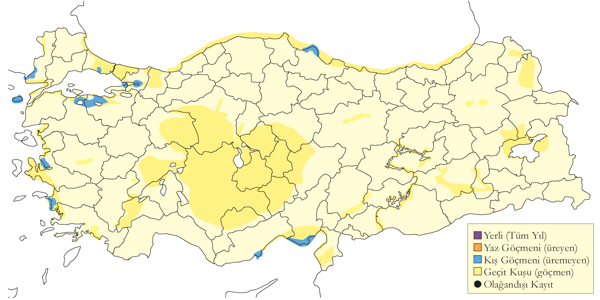
Üreme
Türkiye’de yuvalamaz.
Alttürler ve Sınıflandırma
Türkiye’de nominat alttürü bulunur.
Küçük Suçulluğu
Lymnocryptes minimus, Jack Snipe
Yaygın olarak az sayıda bulunan geçit türü ve kış konuğudur.
Eylül ile nisan sonu arasında tuzcul bataklıklar ve benzeri kıyı alanlarında ve iç kesimlerdeki her tür sulakalanda ve diğer nemli alanlarda bulunur. Çoğunlukla tek başına gözlenir, ara sıra birkaç bireylik (en fazla 12) gevşek gruplar kurar. Göçmenler Doğu Karadeniz Bölgesi’nde da kaydedilmiştir (Kumerloeve, 1967a; Faldborg, 1994)
Nispeten az sayılarda gözlenmesi ciddi şekilde var olduğundan daha az sayıda kaydedildiğini ya da gerçekten seyrek olduğunu düşündürür. Uygun alanlarda gerçekleştirilen yoğun araştırmalarda zaman zaman daha sık gözlenmiş olması birinci olasılığı güçlendirmektedir. Örneğin, Mart 1990’da Çukurova’da 31 birey (Kivit et al., 1994) ve ilkbahar 1992 başlarında Kızılırmak Deltası’nda 15 birey (Hustings & Dijk, 1994) kaydedilmiştir. Ayrıca, 2001 ve 2002 yıllarında Kulu Gölü’nde yapılan gözlemlerde oldukça düzenli bir geçit türü olduğu düşünülmüştür (Richardson, 2003).
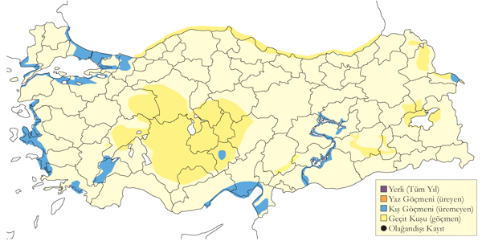
Üreme
Türkiye’de yuvalamaz. Kuzey Avrupa ve Asya’nın tayga kuşağında yuvalar.
Alttürler ve Sınıflandırma
Monotipik bir türdür.
Çulluk
Scolopax rusticola, Eurasian Woodcock
Yaygın olarak çok sayıda bulunan geçit türü ve kış konuğudur.
En sık olarak eylül başından mart sonuna kadar kaydedilir ancak bir kısmı kışlama alanlarına kasım öncesinde gelir. Kuzeydoğudaki dağ vadileri, Uludağ ve Toroslar’daki geçit alanlarında zaman zaman kaydedilir. İlkbahar geçişi nisanın ilk haftasının sonuna kadar devam edebilir. Türün en önemli kışlama alanları nemli çayırlarda ve dere boylarında yoğun olarak avlandığı Karadeniz ve Marmara’dadır. Bu mevsimde İç Anadolu, Ege ve Akdeniz’de de az sayılarda bulunur ve Aralık ayında Van Gölü yakınlarında da bir defa kaydedilmiştir.
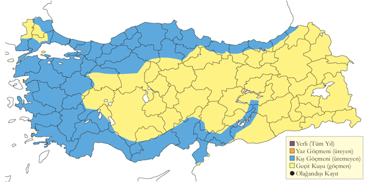
Üreme
Nisan 1992’de Kızılırmak Deltası’nın ormanlık alanlarında 17 Nisan’da gözlenen, kürek çekercesine yavaş kanat çırparak gerçekleştirdiği kur uçuşunun da gözlendiği dört kaydı vardır ancak aynı mevsimde başka gözlemlerin olmaması nedeniyle üreme olasılığını reddedilmiştir (Hustings & Dijk, 1994).
Alttürler ve Sınıflandırma
Monotipik bir türdür.
Büyük Suçulluğu
Gallinago media, Great Snipe
Lokal olarak az sayıda görülen geçit türüdür.
Tarım alanlarını ve sulakalan kenarlarını kullanır. 1966 sonrasındakilerin tümünün detayları da dâhil olmak üzere 1990 öncesindeki tüm mevcut kayıtları listelemiştir (Kirwan, 1992). Modern kaydetmenin başlamasından sonraki 73 kaydın (140 bireye ait) yaklaşık %50’si (kaydedilen bireylerin %60’ından fazlası) sadece dört alanda elde edilmiştir: Çukurova ve Göksu deltaları ile Güney Van Sazlıkları ve Murat Vadisi’nin Bulanık Balatos bölgesi Sonradan yayınlanan yaklaşık 60 kayıt dikkate alındığında, yoğunluğu mayısta olmak üzere ilkbahar göçü 2 Mart ile 8 Haziran arasında ve sonbahar göçü ise eylül sonu ile ekimde zire yaparak 2 Ağustos ile 8 Ekim arasında gerçekleşir. Zaman zaman 9 bireye kadar küçük gruplar halinde gözlenirken bir defasında, Eylül 1982’de Van Sazlığı’nda, toplam 30 birey kaydedilmiştir.
Kışın İç Anadolu’da (1969 Ocak ortasında Akşehir’de bir birey) ve güney kıyılarında (1970 Ocak sonlarında Tarsus Deltası’nda iki birey) kaydedilmiştir.
Ülke genelinden göç sırasında kaydedilen sayılar geçtiğimiz yüzyıl boyunca neredeyse kesinlikle azalmıştır. Bu durum türün hem sayısında hem de yayılışında görülen genel azalmayla paraleldir. Mathey-Dupraz (1920–24) türün Boğaziçi’nde düzenli bir geçit türü olduğunu, Schrader (1891) türün Aydın ve Mersin’de kış göçmeni olduğunu ve kötü hava koşullarında türün neredeyse tüm uygun alanlarda bulunduğunu (belki de suçulluğu G. gallinago ile karıştığını) ve Sandwith (1856) Erzurum’da mayıs ayında büyük sürüler halinde gözlendiğini ve sonbaharda da az sayılarda görüldüğünü belirtir.
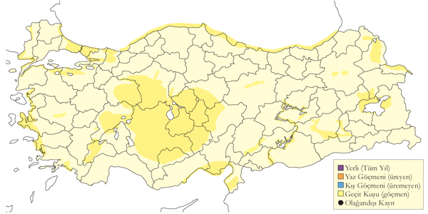
Üreme
Türkiye’de yuvalamaz.
Alttürler ve Sınıflandırma
Monotipik bir türdür.
Sibirya Suçulluğu
Gallinago stenura, Pin-tailed Snipe
Rastlantısal konuktur.
19 Ekim 2021’de Millehya ve sailh şeridinde ilk kez görülmüş (E. Yoğurtcuoğlu) ardından aynı alanada 18 Aralık 2022’de tekrar bulunmuştur.
Üreme
Türkiye’de yuvalamaz. Doğu Sibirya’da yuvalar. Kışı Hindistan ve Güney Doğu Asya’da geçirir.
Alttürler ve Sınıflandırma
Monotipik bir türdür.
Suçulluğu
Gallinago gallinago, Common Snipe
Yaygın olarak çok sayıda bulunan geçit türü ve kış konuğudur. Nadir olarak az sayıda ürer.
İç Anadolu, Doğu Anadolu ve Karadeniz’de üremesi olasıdır (Kasparek, 1992a). 22-23 Haziran 1998’de Eskil ve Cihanbeyli arasında kaydedilen kuyruk tüylerini vızıldatan (İng. drumming) bireyler bu yöndeki en büyük kanıttır (Marlow, Kirwan & Güneş, 2001). Kozanlı Gölü’nde kuyruk tüylerini vızıldatan bireyler. Mayıs 1970’de Doğu Anadolu’da, Haziran 1992’de Haziran’da Kızılırmak Deltası’nda (Hustings & Dijk, 1994), 2002’de Palas Gölü’nde kur davranışı yapan bireyler gözlenmiştir. Kızılırmak Deltası’nda bir yuva bulunmş ve ürediği kantılanmıştır(Oğuz et al., 2022).
İlkbahardaki geliş ve gidiş tarihlerini belirlemek zordur ancak görünüşe göre mart ve nisanın ilk haftasında en yoğun olarak geçiş yapar; Kızılırmak Deltası’nda 1000 bireyden fazlası kaydedilmiştir. Bu tarihten sonra sayılar hızla düşer ancak Doğu Anadolu’dan mayıs sonuna kadar ayrılmazlar. Dönüş yapan göçmenler temmuzun ilk haftası gözlenmeye başlar ve geçiş kasımın ilk yarısına kadar sürer. Bu tarihten sonra sadece kışlama alanlarında kaydedilir. Bu mevsimdeki en yüksek sayı 9-10 Ekim 1968’de Amik Gölü’nde gözlenen 300 bireydir ve alanda muhtemelen birkaç bin birey daha bulunmaktaydı. Kışlayanların çoğu kıyısal sulakalanlarda barınır ve çok sayıda olmasına rağmen geçit yapanlardan daha azdır. En önemli kış sayımları arasında Tarsus’ta kaydedilen 200 birey ve Balıkesir Gönen’de kaydedilen 100 birey vardır.
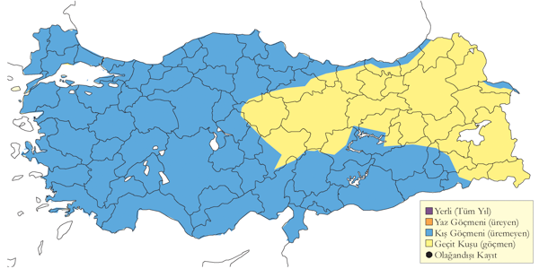
Üreme
Yuvalama alanı: Bataklıklarda yuvalar.
Yuvası: Yerde bir çukura yaptığı yuvasını bitkisel malzemeyle kaplar ve genellikle otların ya da yüksek bitkilerin arasına iyice gizler.
Yumurta sayısı: Bulunan tek yuvada 4 yumurta gözlenmiştir.
Üreme dönemi: Muhtemelen mayıs sonu ve haziran ayında yumurta koyar. İÇA: 22-23 Haziran 1998’de Eskil ve Cihanbeyli arasında, kuyruk tüylerini vızıldatan (drumming) bireyler kaydedilmiştir. Bu gözlem, bölgede üreme olasılığına dair en güçlü kanıtlardan biridir (Marlow et al., 2001). 2002’de Palas Gölü’nde kur davranışı yapan bireyler kaydedilmiştir. Kozanlı Gölü’nde de kuyruk tüylerini vızıldatan bireyler gözlenmiştir. KAR: Haziran 1992’de Kızılırmak Deltası’nda kur davranışı yapan bireyler gözlenmiştir (Hustings & Dijk, 1994). Kızılırmak Deltası’nda bir yuva bulunmuş ve ürediği kanıtlanmıştır (Oğuz et al., 2022). DOA: Mayıs 1970’te Doğu Anadolu’da kur davranışı yapan bireyler gözlenmiştir.
Alttürler ve Sınıflandırma
Türkiye’de nominat alttürü bulunur.
Büyük Denizdüdükçünü
Phalaropus tricolor, Wilson’s Phalarope
Rastlantısal konuktur.
İki kaydı vardır. 19 Eylül 1983’te Balık Gölü’nde (Kızılırmak Deltası) kış tüyörtüsü ile bir birey kaydedilmiş, ancak gözlem ayrıntılı olarak belgelenmemiştir (Bräuning, 1984; Dijksen & Kasparek, 1985). Ardından 5 Mayıs 1984’te Sultansazlığı’nda yaz tüyörtüsü ile kaydedilen bir erişkin (Kasparek, 1990b) gözlemi yayınlanmıştır. Son yıllarda (1992) Bulgaristan’da (Nankinov, 1998) ve Orta Doğu’da kaydedilmiştir; bu Yenidünya türü Umman’a da ulaşmıştır (Porter, Christensen & Schiermacker-Hansen, 1996).
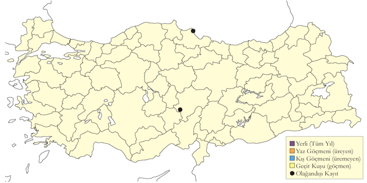
Üreme
Türkiye’de yuvalamaz.
Alttürler ve Sınıflandırma
Monotipik bir türdür. Geçmişte tek türlü Steganopus cinsi altında sınıflandırılmıştır.
Kızıl Denizdüdükçünü
Phalaropus fulicarius, Red Phalarope
Rastlantısal konuktur.
Son zamanlara ait üç tane alan kaydı ve bir tane de eski örnek kaydı vardır. 1 Haziran 2002’de Kulu Gölü’nde üreme tüy örtüsünde bir dişi gözlenmiş (Demirci, 2003) S. Holmstedt vd.). Türe aşina olan gözlemciler tarafından kaydedilmiş olmasına rağmen ilk gözlemle ilgili ayrıntılar çok yetersizdir. 3 Mayıs 2003’te Birecik’te çok iyi gözlendiği bir birey 25 Mayıs 2005’te Sodalı Gölü’nde bir birey fotoğraflanmıştır (Balmer & Betton, 2005b). Ardından 15-30 Eylül 2012’de Çukurova Tuzla Gölü’nde ve 13-17 Nisan 2014’de Kozanlı Saz Gölü’nde kaydedilmiştir.
Hem Ergene (1945) hem de Kasparyan (1956) Türkiye’de bulunduğundan bahsetmektedir ancak her ikisi de güvenilir olmayan kaynaklardır ve bilgi kaynağını 19. yy sonlarında İstanbul’dan alınan bir dişiden bahseden Mathey-Dupraz (1920–24) dayandırmaktadır. Bu kaydın, Kirwan (1997) tarafından yanlışlıkla öne sürdüğü gibi Robson tarafından Boğaziçi’nden alınan dişiye ait olmadığına dikkat edilmelidir çünkü ikincinin daha dikkatli okunmasıyla görüleceği gibi ilk izlenimde Elwes & Buckley (1870) P. lobatus’u kastetmektedir. Brinkmann et al. (1990), Nisan-Mayıs 1989’da Büyük Menderes Deltası’nda bir bireyden bahsetmekte ancak kanıtlayıcı hiçbir detay sunmamaktadır.
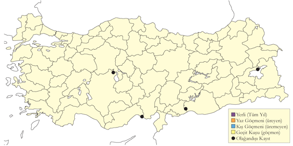
Üreme
Türkiye’de yuvalamaz.
Alttürler ve Sınıflandırma
Monotipik bir türdür.
Denizdüdükçünü
Phalaropus lobatus, Red-necked Phalarope
Özellikle doğu bölgelerinde mevsimsel olarak az sayıda görülen geçit türüdür.
Ülke genelindeki sulakalanlarda ve kıyı bölgelerinde düzenli ancak seyrek ve lokal bir geçit türüdür. İlkbaharda mart sonundan haziran ortasına kadar, yoğun olarak da mayısın ilk yarısında geçiş yapar. Van Gölü Havzası’nda, daha sık ve büyük sürüler kaydedilir. Van/Erçek Gölü bölgesindeki en yüksek sayımlar şöyledir: 20-21 Mayıs 1966’da yaklaşık 900 birey (Kumerloeve & Hollom, 1967), 12-13 Mayıs 1973’te istisna olarak 1800 birey (Groh, 1986), 7 Mayıs 1986’da 380 birey (Martins, 1989), 1-11 Mayıs 1989’da bölgedeki üç yerde en az 855 birey (Berk, Cronau & Have, 1993) ve 2 Mayıs 1990’da Sodalı Gölü’nde yaklaşık 500 birey. 280 bireye kadar sürülere ait birkaç kayıt daha vardır ancak sonbaharda bu bölgeden kısmen bu mevsimde daha az gözlem yapılması nedeniyle nispeten az kaydı vardır ve hiçbiri büyük sürü değildir. Ülkenin geri kalanının çoğunda geçişi tipik olarak 50 bireyden küçük gruplar halindedir. 31 Mayıs 1989’da Çöl Gölü’nde 98 birey, 1987 Mayıs ortasında Çukurova’da 95 birey kaydedilmiştir. Güneydoğu Anadolu’dan çok az kaydı vardır.
Sonbaharda temmuz başından ekim başına kadar kaydedilir, ancak ağustos ve eylül başında yoğundur. Bu mevsimde 30 bireyden daha kalabalık gruplar nadirdir. Eylül 1973 başlarında Ardeşen açıklarında yaklaşık 70 birey kaydedilmiştir.
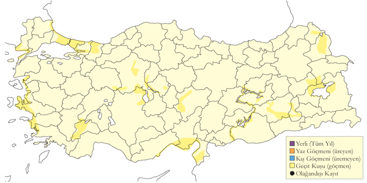
Üreme
Türkiye’de yuvalamaz.
Alttürler ve Sınıflandırma
Monotipik bir türdür.
Terek Düdükçünü
Xenus cinereus, Terek Sandpiper
Yaygın olarak az sayıda görülen geçit türüdür.
Muhtemelen her iki mevsimde de en sık olarak Van Gölü Havzası’nda kaydedilir. Mayıs 1989’da Van sazlıklarında en fazla 16 birey, Temmuz 1986’da Haçlı Gölü’nde 15 birey ve Mayıs 1985’te Bendimahi Deltası’nda 11 birey kaydedilmiştir. Ülkenin geri kalanındaki geçişi tipik olarak çok az sayılarda ve genellikle beş bireyden daha az gevşek gruplar halindedir, istisna olarak Mayıs 1990’da Çukurova’da on birey gözlenmiştir. yaklaşık 50 kayıt derlenmiştir (Kasparek, 1992a). O tarihten sonra birçok kaydı olmuştur ancak muhtemelen yine de toplamda 150’yi pek aşmaz. İlkbaharda mart ortası ile haziran ortası arasında geçer, geçişi mayısın ilk yarısında yoğunlaşır. Sonbaharda temmuz ortası ile ekim sonu arasında görülür, ağustos ortası geçişin en yoğun olduğu dönemdir; eylülün ilk haftasından sonra nadiren kaydedilir.
5 Ocak 2002’de Göksu Deltası’nda bir kışlama kaydı vardır (Demirci, 2002); türün düzenli olarak kışladığı en yakın yer Basra Körfezi’dir. Belirsiz bir referansla 1875 yazında İstanbul çevresinde vurulduğu ve Robert Koleji (Bebek, İstanbul) koleksiyonuna dâhil edildiği belirtilen bir çift (Sclater & Taylor, 1876) dışında Hollom ve Jamieson’un Mayıs 1966’da Erçek Gölü’ndeki kaydından önce ülkede başka kaydı yoktur (Kumerloeve, 1967a, 1966).

Üreme
Türkiye’de yuvalamaz.
Alttürler ve Sınıflandırma
Monotipik bir türdür. Zaman zaman Tringa cinsi altında değerlendirilir.
Dere Düdükçünü
Actitis hypoleucos, Common Sandpiper
Lokal olarak az sayıda bulunan yaz konuğu, yaygın olarak çok sayıda bulunan geçit türü ve az sayıda kış konuğudur.
Yukarı Aras ve Murat vadilerinde, Erzurum çevresinde sık görülen üreyen bir türdür (Kumerloeve, 1967a). Muhtemelen Kralkızı Barajı’nda (Karakaş & Kılıç, 2005), Kocaçay Deltası’nda (Ertan, 1996) ve Dalyan bölgesinde birkaç üreme sezonu kaydı vardır (Kılıç & Kasparek, 1989). En azından zaman zaman daha düşük yüksekliklerde ve Karadeniz’de deniz seviyesinde bile üreyebilir (Hustings & Dijk, 1994).
Geçit sırasında sulakalanlarda ve kıyılarda boldur. İlkbahar geçişi mart ortasından en az mayıs ortasına kadar sürer ve en yoğun olduğu dönem, en azından iç ve güney bölgeleri için, nisanın ikinci yarısıdır. Sonbaharda temmuz sonundan ekim sonuna kadar kaydedilir. Muhtemelen Türkiye’deki üremede başarısız olan bireyler, haziran sonundan itibaren sulakalanlarda tekrar gözükmeye başlar. Kasım ortası kadar geç bir tarihte İç Anadolu’da gözlenen bir birey muhtemelen kışlamaya niyetlenmiştir. Az sayılarda da olsa özellikle Ege ve Akdeniz’deki uygun kıyısal sulakalanlarda düzenli olarak kışlar ancak bu mevsimde bu bölgelerin iç kesimlerinden de birkaç of kaydı vardır. Ayrıca, İç Anadolu’da aralık ortasında ve ocak ortasında birer, Karadeniz’de ocakta bir ve Güneydoğu Anadolu’da ocak sonunda bir kaydı vardır.
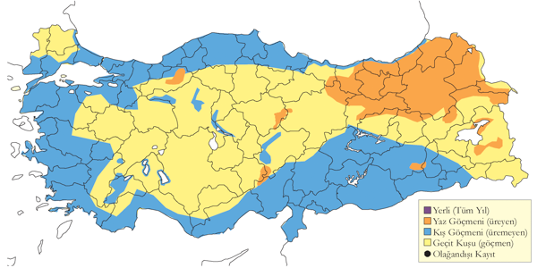
Üreme
Yuvalama alanı: Çoğunlukla yüksek kesimlerde (en az 2600 m), hızlı akan nehirler boyunca ve göllerde ürer. Özellikle adalar, kum ve çakıl suvatlarının bulunduğu alanları tercih eder. Genellikle biraz kenar vejetasyonu bulunan ve söğüt gibi çalılıklarla karışık açık kum alanlarında yuva yapar. Çiftler genellikle yalnız ürer, ancak en uygun habitatlarda iki ya da daha fazla çiftin yakın mesafede ürediği de gözlenmiştir.
Yuvası: Kumda sığ bir oyuk şeklindeki yuvasını bitki sapları, otlar ve yapraklarla kaplar.
Yumurta sayısı: Türkiye’deki yumurta sayısına dair bilgi bulunmamaktadır.
Üreme dönemi: Nisan sonu kur davranışına başlar. Haziran ve temmuz aylarında yavrular çıkar. AKD: 3 Haziran 1999’da Demirkazık’ın kuzeyindeki bir nehirde yavrulu bir çift kaydedilmiştir. KAR: 11 Nisan 1975’te Giresun’da kaydedilen bir yuva kaydı, çok erken bir tarih olması nedeniyle şüpheli olarak değerlendirilmiştir. Mayıs ayında kur davranışı ve alarm ötüşü yapan, haziran-temmuz aylarında muhtemelen yavrulu olan birkaç erişkin kaydedilmiştir. DOA: Ağrı’nın 57 km kuzeybatısında, Sarıcan’da bir nehir kenarındaki düz kumluk alanda seyrek ve uzun otların arasına gizlenmiş bir yuva bulunmuştur. 21 Haziran 2004’te gözlenen dört yumurtanın 25 Haziran’da çatlaması, yumurtlamanın 1 Haziran’da başladığını göstermektedir. Haziran 1968’de Yüksekova ve Çatak’ta iki genç birey kaydedilmiştir (Kumerloeve, 1969a). Haziran 1969 başlarında Gürpınar’ın doğusunda bir çift ve bir yavru görülmüştür. 2 Haziran 1969’da yaklaşık bir haftalık olan bu yavru, yumurtlamanın mayıs başında başladığını göstermektedir. GDA: Diyarbakır yakınlarında Kralkızı Barajı’nda mart sonunda çiftlerin oluştuğu kaydedilmiş, 28 Nisan 2000 ve 22 Nisan 2001’de kur davranışları gözlenmiştir (Karakaş & Kılıç, 2005).
Alttürler ve Sınıflandırma
Monotipik bir türdür. Eskiden Tringa cinsi altında sınıflandırılmıştır (Sibley & Monroe, 1990).
Benekli Düdükçün
Actitis macularius, Spotted Sandpiper
Rastlantısal konuktur.
2 Ağustos 1988’de Göksu Deltası’nda yaz tüy örtüsüne sahip bir bireyin fotoğraflanmasıyla belgelenen bir kaydı vardır (Bruin, 1989). Diğer iddialar görünüşe göre eskiden Robert Koleji’ndeki (İstanbul) koleksiyonda bulunan (Mathey-Dupraz, 1920–24) ve artık mevcut olmayan (Kirwan, 1997) üç örnekle ilgilidir. Ayrıca, güvenilir olmadığı konusunda adı çıkmış olan (Wahby, 1930), Ekim 1920’de Fikirtepe’de (İstanbul) bir bireyden bahsetmektedir. SON GÜNCEL KAYDI GELECEK.
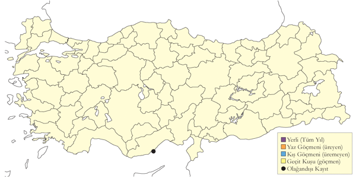
Üreme
Türkiye’de yuvalamaz.
Alttürler ve Sınıflandırma
Monotipik bir türdür. Eskiden Tringa cinsi altında sınıflandırılmıştır (Sibley & Monroe, 1990).
Yeşil Düdükçün
Tringa ochropus, Green Sandpiper
Yaygın olarak çok sayıda bulunan geçit türü ve kış konuğudur. Üreme olasılığı vardır.
Üremesi olası bir türdür. İlk olarak 12 Haziran 1975’te İkizdere ve İspir arasındaki dağlarda 3000 metrede nemli bir çayırda kur davranışı yapan bir birey gözlenmiştir (OST, 1978). Ardından Istranca Dağları’nda Mayıs ve Ağustos 2009’da yapılan kapsamlı bir araştırmada uygun üreme habitatında birkaç bireyin araştırma dönemi boyunca görüldüğünü ve araştırmanın sonuna doğru genç kuşların görüldüğü tespit edilmiştir (Özkan, 2010). Burada ürediğine dair somut kayıtlara ihtiyaç vardır.
Genellikle 50 bireyden daha küçük gruplar halinde gözlenir ancak 200 bireyden daha büyük sürüler de kaydedilmiştir. Genellikle, sadece çok az sayılar güney kıyılarındaki büyük deltalardan geçiş yapar ve geçişin çoğunluğu oldukça dağınıktır, kuşlar en küçük su birikintileri dâhil uygun habitatları kullanırlar. Geçiş, nisan başından mayıs ortasına kadar ve haziran sonundan ekim ortasına kadar zirve yapar ancak İç Anadolu’da en az haziran sonuna kadar önemli sayılar kalır. Göç döneminde, Doğu Karadeniz Dağları’nda 3000 metrenin üzerinde birkaç defa kaydedilmiştir.
Ülkenin batı ve iç kesimlerinde düzenli olarak kışlar. Bu mevsimde küçük gölcüklerde, haliçlerde ve beton sulama kanallarında göç dönemine göre daha bile sık gözlenir ve bu dönemde iç bölgelerdeki en yaygın kıyı kuşudur.
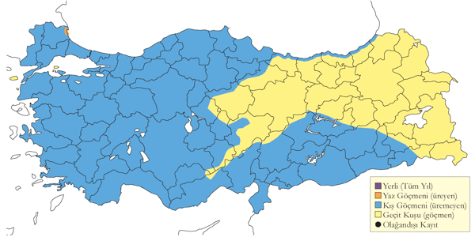
Üreme
Yuvalama alanı: Küçük göller ve bataklıklar bulunan ormanlık alanlar.
Yuvası: Yuvasını bazen yerde bazen ağaçta, alçak bir dalda yapar. Eski bir ardıç yuvasını kullanabilir
Yumurta sayısı: Türkiye’de yumurta sayısı bilinmez. Diğer yerlerde 3-4 yumurta koyar.
Üreme dönemi: Mayıs ve haziran arasında yumurta bırakması beklenir. Yavrular temmuz ve ağustosta görülür. MAR: Mayıs ve Ağustos 2009’da Istranca Dağları’nda birkaç birey gözlenmiş, Ağustos’ta genç kuşlar görülmüştür (Özkan, 2010). KAR: 12 Haziran 1975’te İkizdere ve İspir arasındaki dağlarda 3000 metrede nemli bir çayırda kur davranışı yapan bir birey gözlenmiştir (OST, 1978).
Alttürler ve Sınıflandırma
Monotipik bir türdür.
Bataklık Düdükçünü
Tringa stagnatilis, Marsh Sandpiper
Yaygın olarak genellikle az sayıda görülen geçit türüdür.
Lagünlerde, çamur düzlüklerinde, gölcüklerde ve sazlıklarda bulunur. Doğu bölgelerinde daha seyrektir. Mart ortasından haziran başına kadar süren ilkbahar geçişinde küçük sürüler oluşturur. Çoğunluğu nisanın ilk yarısında geçiş yapar. Örneğin, toplam 498 bireylik ilkbahar geçişinin 167’si 5 Nisan 1990’da Çukurova’da kaydedilmiştir (Kivit et al., 1994). 7 Temmuz’da başlayan sonbahar geçişi de genellikle küçük sürüler halindedir ancak özellikle ağustosun ilk yarısından sonra lokal olarak dikkate değer sayılar kaydedilebilir. Örneğin, 22-23 Eylül 1974’te Hotamış Sazlığı’nda 135 birey kaydedilmiştir. Sonbahar geçişi ekim sonlarına kadar devam eder ve bu tarihten sonra bile ülkenin batı yarısında çok az sayılarda kaydedilir. Özellikle Gediz Deltası, Acıgöl ile Göksu ve Çukurova Deltaları ve hatta çok daha nadir olarak İç Anadolu’da olmak üzere kışın da zaman zaman çok az sayılarda kaydedilir.
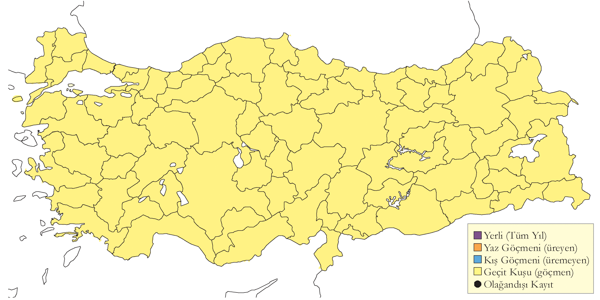
Üreme
Türkiye’de yuvalamaz.
Alttürler ve Sınıflandırma
Monotipik bir türdür.
Orman Düdükçünü
Tringa glareola, Wood Sandpiper
Yaygın olarak çok sayıda bulunan geçit türüdür.
İlkbahar geçişi mart ortasında başlar, nisanın ikinci çeyreğinde zirve yaparak mayıs sonuna kadar devam eder. Az sayılarda yazı da geçirebilir. Sonbahar göçünde haziran sonunda sürüler gözlenir ve geçit kasım sonuna kadar devam eder. Her zaman çok az sayılarda olmak üzere çok nadir olarak güneyde ve batıda kışlar.
Genellikle birkaç düzineden daha küçük gruplar halinde gözlenir ancak bazen İç Anadolu’da ve diğer yerlerdeki sulakalanlarda daha yüksek sayılar da kaydedilir. Örneğin, 17 Eylül 1996’da Manyas Gölü’nde sayılan en az 1000 birey en yüksek kayıttır.
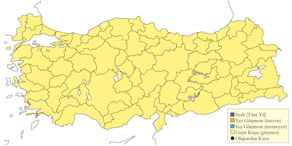
Üreme
Türkiye’de yuvalamaz.
Alttürler ve Sınıflandırma
Monotipik bir türdür.
Kızılbacak
Tringa totanus, Common Redshank
Yaygın olarak çok sayıda bulunan görülen yerli ve yarı göçmendir. Kışın göç alır, sayıları artar.
Tersakan ve Bolluk gölleri, Akşehir Gölü ve Sultansazlığı ve Van Gölü ile Erzurum çevresindeki sulakalanlar en önemli üreme alanlarıdır. Haziran ortasında Erçek Gölü’nde 400 birey kaydedilmiştir. Geçmişteki önemli alanlardan Yüksekova sulakalanları ve Ereğli Sazlıkları tarım uygulamalarındaki değişiklikler, kurutma ve otlatma baskısı nedenleriyle artık önemini kaybetmiştir.
Ülkenin büyük çoğunluğunda, mart sonundan haziran başına ve haziran sonundan kasım sonuna kadar düzenli ve bol olarak geçit yapan bir türdür. En yüksek sayılar ağustos sonunda kaydedilir. Örneğin, 26 Ağustos 1971’de Meriç Deltası’nda yaklaşık 1000 birey ve 17 Ağustos 1969’da Tuz Gölü’nde en az 2500 birey kaydedilmiştir. Kışın, çoğunluğu Ege ve Akdeniz’de olmak üzere kıyısal sulakalanlarda ve daha lokal olarak da diğer yerlerde sürüler oluşturur. 5 Ocak 2002’de Tuzla-Milas’ta kaydedilen 1260 birey ile Aralık 2004’te Gediz Deltası’nda kaydedilen yaklaşık 1500 birey en yüksek kış sayımlarıdır.
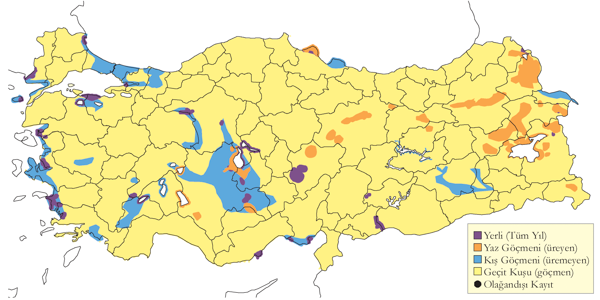
Üreme
Yuvalama alanı: Sazlıklarda, göl kenarlarında, su kıyılarındaki çayırlarda ve göllerdeki büyük adalarda ürer.
Yuvası: Yerde bir çukura yaptığı yuvasını bitkisel malzemeyle kaplar ve genellikle otların ya da yüksek bitkilerin arasına iyice gizler.
Yumurta sayısı: Türkiye’de gözlenen yumurta sayısı 3 (4 yuvada) ve 4 (10 yuvada) olarak kaydedilmiştir. 1-2 yumurtalı yuvalar, tamamlanmamış kuluçka olarak değerlendirilmiştir.
Üreme dönemi: Kıyısal alanlarda mayıs ortasında, İç Anadolu’da mayıs başında, Doğu Anadolu’da mayıs sonu ve haziran başında yumurta koyar. Yavrular haziran ve temmuz ayında görülebilir. EGE: Haziran 1995’te Gediz Deltası’nda bir erişkin ve iki yavru kaydedilmiştir (Eken, 1997a). KAR: 4 Haziran 1992’de Kızılırmak Deltası’nda kaydedilen yumurtadan yeni çıkmış dört yavru (Hustings & Dijk, 1994), yumurtlamanın mayısın ikinci haftasında başladığını göstermektedir. İÇA: Mayıs ortasında tamamlanmış kuluçkalı beş yuva bulunmuştur. 5 Haziran 1992’de Eşmekaya’da bulunan 4, 2 ve 1 yumurtalı üç yuva, telafi yuvaları olarak değerlendirilmiştir. 24 Haziran 1992’de Bolluk Gölü’nde gözlenen büyük yavru, yumurtlamanın mayıs başında olduğunu göstermektedir. 15 Mayıs 2004’te Bolluk Gölü’nde dört yumurtalı üç yuva bulunmuş, yumurtalardan biri 16 Mayıs 2004’te çatlamış olup yumurtlamanın 20 Nisan civarında başladığını göstermektedir. DOA: 31 Mayıs 1990’da Erçek Gölü’nde bulunan yumurtalı bir yuva, bölgedeki en erken kayıttır. Aynı yerde, biri 3 Haziran 2001’de ve ikisi 28 Haziran 1968’de olmak üzere yumurtaları tamamlanmış üç yuva daha bulunmuştur. 8 Haziran 2004’te Tatvan yakınlarında dört yumurtalı bir yuva ile muhtemelen yavruları olan ve alarm ötüşü yapan birkaç erişkin kaydedilmiştir. 1 Temmuz 1985’te Van’da bulunan, yumurtadan yeni çıkmış dört yavrulu bir yuva, yumurtlamanın haziran başında başladığını göstermektedir.
Alttürler ve Sınıflandırma
Nominat totanus ve muhtemelen zayıf biçimde ayrılmış olan ussuriensis alttürlerinin bulunduğu düşünülmüştür (Cramp, 1993; Kivit et al., 1994). Daha sonra, totanus alttürünü kuzey Avrupa ile sınırlamayı tercih etmiş ve Türkiye’de üreyenlerin muhtemelen ya britannica (totanus alttürünün sinonimi) ya da bilinmeyen bir form olduğunu düşünmüştür (Roselaar, 1995). Kasım 1945’te Ankara yakınlarında ölçülerine dayanarak Orta Asya’da Pamir’de üreyen eurhina ırkından olabileceğini etmiştir (Wadley, 1951). (Kumerloeve, 1967a, 1969a) doğuda eurhina alttürüne atfettiği örnekler toplamış ancak bu formun teşhis edilmesi ile ilgili zorlukları da itiraf etmiştir. G. M. Kirwan, Temmuz 2003’te Tring Doğa Tarihi Müzesi’nde Wadley örneğini bulamamıştır ancak Türkiye’den iki başka örnek vardır: 5 Şubat 1869’da alınan bir birey (yer ve alan kişi not edilmemiştir) ve 13 Mayıs 1876’da Danford tarafından alınan bir erkek birey daha zayıf biçimde tanımlanan eurhina alttürüne uymaktadır.
Küçük Sarıbacak
Tringa flavipes, Lesser Yellowlegs
Rastlantısal konuktur.
Amerika kıtasına yaşayan, Eski Dünya’da rastlantısal konuk olan bir türdür. 25 Ağustos 1988’de Ardahan yakınlarında (Kars, Doğu Anadolu) bir bireyin gözlendiği iddia edilmiştir ancak bunu ispat edecek ayrıntılar eksiktir (Kasparek, 1990b). Ancak daha sonra, 27 Kasım 2006’da Kızılırmak Deltası’nda ilk kışındaki bir birey yakalanıp fotoğraflanmıştır (Erciyas et al., 2008).
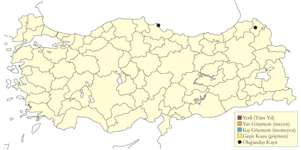
Üreme
Türkiye’de yuvalamaz.
Alttürler ve Sınıflandırma
Monotipik bir türdür.
Kara Kızılbacak
Tringa erythropus, Spotted Redshank
Yaygın olarak oldukça çok sayıda bulunan geçit türü, lokal olarak az sayıda görülen kış konuğudur.
Ana göç dönemleri mart ortası ile haziran başı ve temmuz başı ile kasım başı arasındadır. Geçişi, martın ikinci haftası ile eylülün üçüncü haftasında zirve yapar. Genellikle on bireyden daha küçük gruplar halinde gözlenir ancak istisna olarak sonbahar sonlarında İç Anadolu’da birkaç yüz bireyden oluşan sürüler kaydedilir. Örneğin, 21 Kasım 1969’da Sultansazlığı’nda 1300 birey ve 23 Eylül 1974’te Hotamış’ta 1000 birey ve 10 Nisan 1990’da Çukurova’da 605 bireye kadar kaydedilmiştir (Kivit et al., 1994).
Ara sıra tek bir alanda yaklaşık 300 bireye kadar olmak üzere genellikle nispeten az sayılarda kışlar ancak 1999’da kış ortası sayımlarında sadece 53 birey kaydedilmiştir. İç kesimlerde Doğu Anadolu’da aralık ortası kadar geç bir tarihte bile kaydedilmiştir. Bazı bireyler zaman zaman Anadolu’nun iç kesimlerinde yazı geçirir.
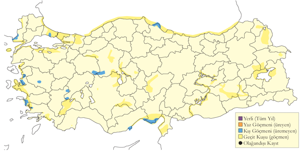
Üreme
Türkiye’de yuvalamaz.
Alttürler ve Sınıflandırma
Monotipik bir türdür.
Yeşilbacak
Tringa nebularia, Common Greenshank
Yaygın olarak nispeten çok sayıda bulunan geçit türü ve kış konuğudur.
Mart ortasında başlayan geçişi nisanda yoğunlaşarak en az mayıs ortasına kadar sürer. Daha sonraki tarihlerde de ara sıra gözlenir ve bunların bazıları üremeden yazı İç Anadolu’da geçirir (OST, 1978). Sonbahar göçü ise temmuz ortasında başlar ve kasım sonuna kadar sürer. Sürüler çoğunlukla beş bireyden az olmak üzere genellikle oldukça küçüktür. Ancak nadir olarak 50 bireyden büyük gruplar da gözlenir. İlkbahar 1990’da Çukurova’da toplamda sadece 242 birey kaydedilmesi geçişin ölçüsünü göstermektedir (Kivit et al., 1994). Sarıyar Barajı gibi iç kesimlerdeki donmayan sulakalanlar da düzenli kışlama girişimlerini destekliyor olabilir.
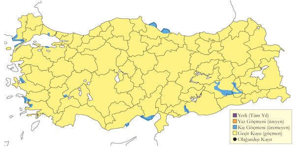
Üreme
Türkiye’de yuvalamaz.
Alttürler ve Sınıflandırma
Monotipik bir türdür.
Taşçeviren
Arenaria interpres, Ruddy Turnstone
Yaygın olarak az sayıda görülen geçit türü ve lokal kış konuğudur.
Kayıtların çoğu kıyısal sulakalanlardandır, anca İç Anadolu’daki sığ göllerde de bulunur. İlkbaharda, mart başında haziran başına kadar görülür, yoğun olarak nisan sonu ve mayısta geçiş yapar, geçişin medyan tarih 10 Mayıs’tır (Kasparek, 1992b). Sonbaharda ise temmuz ortasından ekim sonuna kadar, yoğun olarak ağustos sonu ve eylülde kaydedilir; geçişin medyan tarih 14 Eylül’dür (Kasparek, 1992b). Sürüler tipik olarak on bireyden daha azdır ancak 6-15 Nisan 1987’de Çukurova’da kaydedilen toplam 154 birey, buna ek olarak 2-22 Mayıs’ta kaydedilen 73 birey (Have et al., 1988), Göksu Deltası’nda 14 Eylül 1972’de en az 50 ve Ekimde 43 bireylik bir grup (Kasparek, 1992b), 13 Nisan 1990’da Çukurova’da 22 ve 1 Mayıs ile 9 Haziran 1992 tarihleri arasında Kızılırmak Deltası’ndan geçen toplam 41 birey gibi istisna kayıtlar da vardır.
Ege ve Akdeniz kıyılarında kışın aralık ve şubat arasında daha seyrek ve düzensizdir; zaman zaman daha büyük sürüler de gözlenir, örneğin Menderes Deltası’nda 40 bireye kadar kaydedilmiştir. 30 ve 50 bireylik sürüleri de dâhil ederek diğer şubat kayıtlarını da listelemiştir (Kasparek, 1992b).
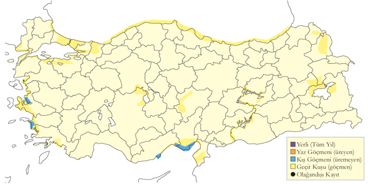
Üreme
Türkiye’de yuvalamaz.
Alttürler ve Sınıflandırma
Türkiye’de nominat alttürü bulunur.
Büyük Kumkuşu
Calidris canutus, Red Knot
Yaygın olarak az sayıda görülen geçit türü ve kış konuğudur.
Geçit sırasında genellikle kıyısal sulakalanlarda bulunur. Türkiye’deki 41 kaydı ile yapılmış analize göre ilkbahar geçişi mart ortası ile haziran başı arasında olup, muhtemelen mayısın ilk yarısında zirve yapar. Sonbaharda ise temmuz sonu ile ekim sonu arasında görülür.
Tüm bölgelerde kaydedilen ve uygun kıyısal sulakalanlarda (çoğunlukla Ege ve Akdeniz) az sayıda (genellikle 100 birey) kışlayan düzenli bir geçit türüdür.
Batı Anadolu’daki sulakalanların çoğunda en son sistematik sayımlar tipik olarak üç ila 100 birey arasında ancak 200 bireye kadar (2 Şubat 2002’de; bkz.(Balmer & Betton, 2003a; Demirci, 2002) az sayılarda kışladığını teyit etmiştir. Çoğunlukla Gediz Deltası ve Çukurova’da kaydedilir ancak 204 birey 9 Mart 2005’te Kızılırmak Deltası’nda gözlenmiştir. Kışın güneybatıdaki diğer yerlerden de nadiren yalnız bireyler bildirilmiştir.
Nominat canutus alttürü çoğunlukla halka göçü yapar (İng. Great Circle Route). Kuzeybatı Atlantik kıyılarındaki göç yollarını takip ederek Batı Afrika’daki ana kışlama alanlarına ulaşır, ilkbaharda ise Doğu Akdeniz göç yolunu kullanarak kuzeye çıkar. Bu rota göz önüne alındığında Türkiye’de ve Doğu Akdeniz’de ilkbaharda az sayılarda kaydedilmesi şaşırtıcı değildir.
İstanbul civarında nadir bir geçit türü olduğu (Mathey-Dupraz, 1920–24), 1914-1989 yılları arasında 18 kaydını listeleyerek çok seyrek bir geçit türü olduğu (Kasparek, 1990b, 1992a) bilinir.
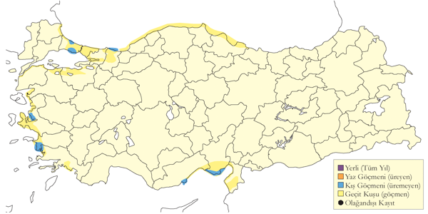
Üreme
Türkiye’de yuvalamaz.
Alttürler ve Sınıflandırma
Batı ve Güney Afrika’da kışlayan ve Sibirya’nın kuzeyi ile muhtemelen Yakutistan’da üreyen nominat canutus alttürü bulunur.
Döğüşkenkuş
Calidris pugnax, Ruff
Yaygın olarak ve nispeten çok sayıda bulunan geçit türü ve az sayıda kış konuğudur.
Tüm sulakalanlarda ve tarım arazilerinde kaydedilen en bol kıyı kuşlarındandır. İlkbahar göçü şubatta başlar ve haziran başına kadar devam eder. Çoğu martın ikinci yarısı ile nisanın ilk üç haftasında geçiş yapar. Genellikle oldukça yüksek sayılarda kaydedilir ve Ereğli Sazlıkları, Sultansazlığı, Balıkdamı, Kızılırmak Deltası ve Göksu Deltası gibi birçok alanda 1000 bireyin üzerindeki kayıtlar nadir değildir. Muhtemelen en yüksek sayılar İç Anadolu’da kaydedilir. 19 Nisan 1994’te Sultansazlığı’nda 10.000 birey ve 20 Şubat 1974’te Hotamış Sazlığı’nda 6856 birey kaydedilmiştir. Ancak,, ilkbahar 1990’da Çukurova’dan geçiş yapan toplam 34.000 bireyden fazlasını saymıştır (Kivit et al., 1994). haziran sonu ile temmuz başındaki bazı kayıtların yazı geçiren bireylere ait olabileceğini öne sürer (Kasparek, 1992a).
Karadeniz, Ege, Akdeniz, Marmara ve İç Anadolu’daki sulakalanlarda seyrek olmayan ancak düzensiz bir kış konuğudur. Çoğunluğu Konya Havzası’nın güneyinde (en fazla Hotamış Sazlığı’nda 320 birey), Akdeniz kıyısında, Ege’nin kıyı ve iç göllerinde, Büyükçekmece’de ve Kızılırmak Deltası’nda kışlar. Kasım ve şubatta daha yüksek sayılar gözlenir ancak bunlar muhtemelen göç öncesi ya da sonrasına ait sürülerdir.

Üreme
Türkiye’de yuvalamaz.
Alttürler ve Sınıflandırma
Monotipik bir türdür. Önceleri Philomachus pugnax olarak adlandırılırdı.
Sürmeli Kumkuşu
Calidris falcinellus, Broad-billed Sandpiper
Yaygın olarak az sayıda görülen geçit türüdür.
Ülke genelindeki sulakalanlarda ve kıyı bölgelerinde seyrekten oldukça bola kadar düzenli olarak kaydedilen bir geçit türüdür. İlkbaharda 17 Nisan (bir defasında 11 Mart’ta) ile 29 Haziran (özellikle ortadaki iki hafta olmak üzere nisan sonu ile mayısta zirve yapar) tarihleri arasında geçer. Ülkenin en batı ucundan geçişi tipik olarak çok az sayıdadır. İç ve güney bölgelerdeki en yüksek kayıtlar şöyledir: 24 Nisan ile 20 Mayıs 1987 tarihleri arasında Çukurova Deltası’nda toplam 123 birey (Have et al., 1988), yine bu alanda 1990 yılının Nisan sonu ile Mayıs sonu arasında 134 birey (Kivit et al., 1994), aynı alanda Ağyatan Gölü’nde 30 Nisan 1997’de 73 birey, aynı alanda Tuz Gölü’nde 8 Mayıs 2004’te 110 birey, Yumurtalık’ta 9 Mayıs 2005’te 150 birey (Balmer & Betton, 2005b) ve 10 Mayıs ile 7 Haziran 1992 tarihleri arasında Kızılırmak Deltası’nda toplam 218 bireye kadar (Hustings & Dijk, 1994) kaydedilmiştir.
Sonbaharda 10 Temmuz ile 27 Eylül (çoğunluğu Ağustos sonu ile Eylül başında) tarihleri arasında geçiş yapar. Özellikle Van Gölü Havzası’nda daha sık gözlenir. Örneğin, 3 Ağustos ile 11 Eylül 1986 arasında Van Sazlığı’nda toplamda 206 bireye kadar (Martins 1989), 16 Ağustos 1989’da Bendimahi Deltası’nda 80 birey ve Ağustos 1990 sonlarında bu bölgedeki birkaç yerde 100 bireyin üzerinde ((Kirwan & Martins, 1994)) kaydedilmiştir. Geçiş neredeyse kesinlikle ekim başına kadar devam eder ancak ekim ayında hiç kaydı yoktur. 27 Ocak 2008’de Gediz Deltası’nda gözlenen altı bireylik grup ülkedeki tek kış kaydıdır. Modern, sistematik kaydetmenin başlamasından önce nispeten çok az kaydı vardır.
Üreme
Türkiye’de yuvalamaz.
Alttürler ve Sınıflandırma
Türkiye’de nominat alttürü bulunur. Eskiden Limicola falcinellus olarak adlandırıldı.
Kızıl Kumkuşu
Calidris ferruginea, Curlew Sandpiper
Yaygın olarak ve nispeten çok sayıda bulunan geçit türü ve nadir kış konuğudur.
Ülkedeki sulakalanlarda en yoğun olarak geçiş yaptığı dönem nisan sonu ile mayıs sonu arasındadır. Genellikle küçük sürüler ya da birkaç birey olarak görülür. Kıyısal sulakalanlarda yüksek sayılarda kaydedilir. Örneğin, 18 Mayıs 1993’te Çamaltı Tuzlasında 1000 birey ve 13 Mayıs 2001’de Gediz Deltası’nda 478 birey kaydedilmiştir. 1987 ilkbaharında, çoğu mayısın ikinci haftasında olmak üzere neredeyse 3000 birey Çukurova’dan geçmiştir (Have et al., 1988) ve 1990 ilkbaharında da, 8 Mayıs’taki 2808 birey dahil, 6029 birey kaydedilmiştir (Kivit et al., 1994). Güneye geçiş temmuz ortasından eylül ortasına kadar gözlenir ve en büyük yoğunluk genellikle ağustosun ikinci haftası olur ve bunlar muhtemelen erişkinlerdir. 23 Ağustos 1988’de Tuzla Gölü’nde (Çukurova) 200 birey sayılmıştır. İlk yılındaki bireyleri içeren ikinci yoğunluk ise eylülün ortası ile sonunda gözlenir. Akdeniz’de en geç göçmenler 10 Ekim’de, İç Anadolu’da ise 6 Kasım’da kaydedilmiştir. Son zamanlarda Büyük Menderes Deltası ve daha düzensiz Göksu Deltası’nda küçük sürüler kışlayabilir.
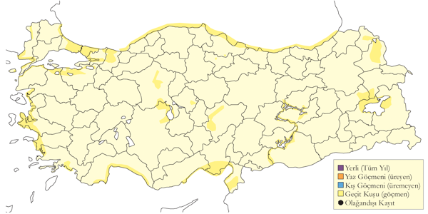
Üreme
Türkiye’de yuvalamaz.
Alttürler ve Sınıflandırma
Monotipik bir türdür.
Sarı Bacaklı Kumkuşu
Calidris temminckii, Temminck’s Stint
Yaygın olarak az sayıda görülen geçit türü, nadir kış konuğudur.
Anadolu’nun ana göç yolu üzerinde olmasına rağmen az sayıda kaydı vardır ve görünüşe göre bu tür nispeten gözden kaçmaktadır. İlkbahar 1990’da Çukurova’da sadece 103 birey gözlenmiştir. Bunun bir sebebi muhtemelen sulakalanların daha vejetasyonlu bölümlerini tercih etmesidir. İlkbahar geçişi mart sonunda başlar ve mayıs sonuna kadar sürer. En erken kayıtlar Akdeniz kıyıları ile İç Anadolu’nun güneyindedir. 21-25 Nisan 1973’te Göksu Deltası’nda kaydedilen 100 birey en büyük yoğunluktur ancak bilinmeyen bir tarihte Kulu Gölü’nde 300 birey gözlendiğine dair kanıtlanmamış bir rapor da vardır (Ertan, Kılıç & Kasparek, 1989). Çoğunlukla İç Anadolu’daki sazlık sulakalanlarda ve genellikle 10 bireyden küçük sürüler halinde kaydedilir; 22 Mayıs’ta Eşmekaya’da kaydedilen 50 birey dikkate değerdir. Sonbahar geçişi ise temmuz sonundan eylül sonuna kadar gerçekleşir. Ekim ayında nispeten az sayıda gözlenir.
Kışın ara sıra Akdeniz, Ege ve Güneydoğu Anadolu’da az sayılarda kaydedilir. 50 bireye kadar kaydedildiği Göksu Deltası ve Çukurova Lagünleri en önemli kışlama alanıdır. Diğer kışlama alanları arasında daha düzensiz ve genellikle sadece az sayılarda gözlendiği Birecik ve Gediz Deltası vardır.
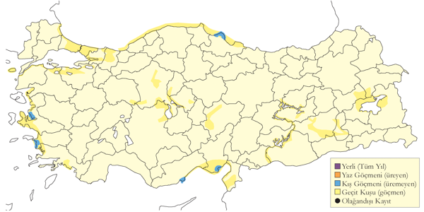
Üreme
Türkiye’de yuvalamaz.
Alttürler ve Sınıflandırma
Monotipik bir türdür.
Ak Kumkuşu
Calidris alba, Sanderling
Yaygın olarak az sayıda görülen geçit türü ve kış konuğudur.
Kıyısal sulakalanlarda ve daha nadiren iç bölgelerdeki göllerde konaklar. Genellikle az sayılarda kaydedilir ancak göçün zirve yaptığı dönemlerde 100 bireyi aşan sürüler de görülmüştür. Örneğin, 25 Ağustos 1967’de Karataş’ta 150 birey, Çukurova’da 24 Nisan 1990’da 288 birey (Kivit et al., 1994) ve 29 Nisan 1997’de 300 birey kaydedilmiştir. İlkbahar göçü mayıs başı ile haziran başı arasında zirve yapar. Göçmen olduğu kesin olan ilk bireyler türün kışlamadığı iç bölgelerde nisanın ilk yarısında gözlenir. Sonbahar göçü ağustos ortasından kasım başına kadar gerçekleşir. 25 Temmuz gibi çok erken bir tarihte İç Anadolu’dan bir kaydı vardır.
Kasım başından mayıs sonlarına kadar kışlar. Büyükçekmece’de 130 ve Tarsus Deltası’nda 160 kuşluk sürüler sayılmıştır. Kuzeybatıda İğneada’dan güneyde Göksu Deltası’na kadar diğer yerlerde ise daha küçük gruplar kışlar.
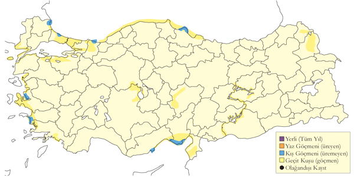
Üreme
Türkiye’de yuvalamaz. Kuzey Kutup Denizi kıyılarında tundra kuşağında yuvalar. Kozmopolit bir türdür.
Alttürler ve Sınıflandırma
Monotipik bir türdür.
Kara Karınlı Kumkuşu
Calidris alpina, Dunlin
Yaygın olarak çok sayıda bulunan geçit türü ve kış konuğudur.
Göçün en yoğun olduğu dönemler nisan başından mayıs sonuna kadar ve temmuz sonundan kasım ortasına kadardır. İç Anadolu’daki tatlı su göllerinde 11 Mart kadar erken tarihlerde ve Karadeniz’de de temmuz ortasından itibaren göçmenler görülür. Genellikle gevşek sürüler oluşturur ancak mayıs ayında Acıgöl’de 1500 birey kaydedildiğinden (Kasparek, 1992a) bahsederken 4-15 Nisan 1987’de Çukurova’da 10.539 birey (Have et al., 1988) ve 10 Nisan 1990’da aynı bölgede gerçekleştirilen bir araştırmada maksimum 3688 birey (Kivit et al., 1994) kaydetmiştir. 24 Eylül 2004’te Çukurova’da sayılan yaklaşık 1000 birey en yüksek sonbahar kaydıdır.
Özellikle Akdeniz ve Ege’deki kıyısal sulakalanlarda olmak üzere ülkenin batı ve orta bölgelerinde lokal olarak çok sayıda kışlayan bir türdür. Daha nadir olarak (bazen yüzlercesi) Tuz Gölü ve Burdur Gölü gibi iç kesimlerdeki acı göllerde de kaydedilir. Fırat ve Dicle havzasında az sayıda bulunur. Kasım sonunda büyük sürüler oluşturur ve şubat başına kadar bu şekilde kalır. 12 Ocak 2003’te 3649 birey ve 2 Şubat 2003’te 5000 bireyden fazlasının kaydedildiği Gediz Deltası günümüzdeki en önemli kışlama alanıdır. Büyük Menderes Deltası ve Çukurova da 2500 bireyi aşan toplamlarla (geçmişte 5000 bireye kadar) önemli alanlardır. İç bölgelerdeki sayılar önemsizdir ve toplam kış popülasyonu muhtemelen 10.000 ile 16.000 birey arasındadır.
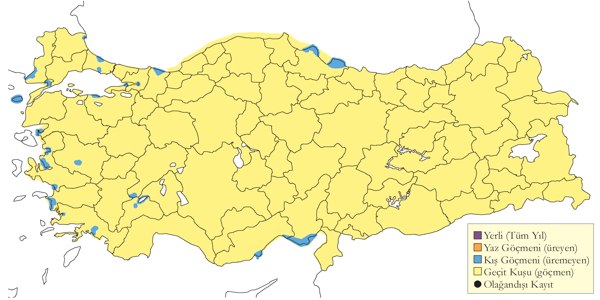
Üreme
Türkiye’de yuvalamaz.
Alttürler ve Sınıflandırma
Muhtemelen çoğunluğu nominattır ve WIWO’nun Çukurova Deltası’nda 1988 yılında yaptığı halkalama çalışmalarına göre hangi az sayıda schinzii alttürü de bulunur. Batı Palearktik’te muhtemelen rastlantısal olduğu düşünülen doğu formu sakhalina (Cramp & Simmons, 1983) bile Türkiye’de bulunabilir. (Have et al., 1988; Kivit et al., 1994).
Küçük Kumkuşu
Calidris minuta, Little Stint
Yaygın olarak çok sayıda bulunan geçit türü ve kış konuğudur.
Genellikle çamurluk alanların olduğu her çeşit sulakalanda bulunur. Tüm aylarda, hatta çoğu tür için sonbahar göçünün diğer yerlere göre bir ay daha geç başladığı Akdeniz’de haziran sonunda bile kaydedilir. İlkbahar göçü çoğunlukla nisan başından haziran başına kadar gerçekleşir. İstisna olarak mayıs ortasında Ereğli Sazlığı’nda 8000-10.000 birey kaydedilmiştir (Kasparek, 1992a). 1990 ilkbaharında Çukurova’dan geçtiği tahmin edilen yaklaşık 35.000 birey (Kivit et al., 1994) büyük sulakalan sistemlerinden ne ölçüde geçiş yaptığını gösteren iyi bir örnektir. Sonbaharda temmuz sonundan itibaren gözlenir ve her ne kadar genellikle birkaç yüzü geçmese de bu dönemde Ereğli Sazlığı’nda 8000 bireye kadar kaydedilmiştir (Kasparek, 1992a). Acıgöl ve Tuz Gölü bu dönemde 1000 bireyden fazlasını barındıran alanlar arasındadır. Diğer alanların çoğunda göç eylül ortasında zirve yapar ve kasım başına kadar sürer. Sayımların çoğu sadece düşük iki basamaklı sayılar içerir.
Doğu Anadolu dışında ülke genelinde düzenli ancak lokal olarak kışlayan bir türdür. En yüksek sayılar Akdeniz kıyılarında kışlar, Ocak 1996’da toplam kış popülasyonunun üçte ikisi (ülke genelinde sayılan 4728 kuşun 3149’u) burada sayılmıştır. Büyük çoğunluğu (2.200 birey) Yumurtalık’ta kaydedilmiştir. Akdeniz’de Ağyatan Gölü (en fazla 1560) ve Göksu Deltası (en fazla 1550), Ege’de Gediz Deltası (en fazla 1550) ve Acıgöl, Marmara’da Büyükçekmece ve Kocaçay Deltası, Karadeniz’de Kızılırmak Deltası (en fazla 881) ve İç Anadolu’da Tuz Gölü (en fazla 1000) diğer önemli kışlama alanlarıdır.
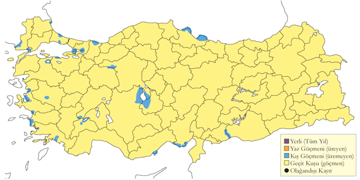
Üreme
Türkiye’de yuvalamaz.
Alttürler ve Sınıflandırma
Monotipik bir türdür.
Ak Sokumlu Kumkuşu
Calidris fuscicollis, White-rumped Sandpiper
Rastlantısal konuktur.
İyi belgelenmiş bir kaydı vardır. 17 Mayıs 1996’da Göksu Deltası’nda gözlenen bir birey Orta Doğu için ilk kayıttır (Browne, 1997). İkinci kaydı 23 Mayıs 2001’de aynı alanda görülmüştür, burada gözlemcileri kuşu tanımlamışlar, ancak fotoğraf çekememişlerdir.

Üreme
Türkiye’de yuvalamaz.
Alttürler ve Sınıflandırma
Monotipik bir türdür.
Çizgili Kumkuşu
Calidris melanotos, Pectoral Sandpiper
Rastlantısal konuktur.
Türkiye’de oldukça nadir rastlanan bir türdür. Şimdiye kadar kaydedilen gözlemler sonbahar göç dönemine aittir. 9-10 Mayıs 2005’te Kulu Gölü’nde fotoğraflanarak belgelenen tek erkek birey ilk kaydıdır. İlk kez 20 Eylül 2008’de Konya Kozanlı Gölü’nde görülmüştür. Sonra 6 Ekim 2008’de Adana Ağyatan’da 2 birey (S. Bekir), 7-9 Ekim 2010’da Edirne Enez Lagünleri’nde (E. Yoğurtçuoğlu), 19-26 Ekim 2014’te tekrar Konya Kozanlı Gölü’nde, 29-30 Eylül 2012’de Çukurova Deltası’nda, 30 Eylül-1 Ekim 2018’de Balıkesir Manyas Gölü’nde (A. Tüydeş), 77 Ekim 2020’de Gaziantep Hancağız Barajı’nda (M. E. Tiryaki) ve 8-9 Eylül 2024’te Manisa Dibekdere’de (M. Altunbaş) kaydedilmiştir.
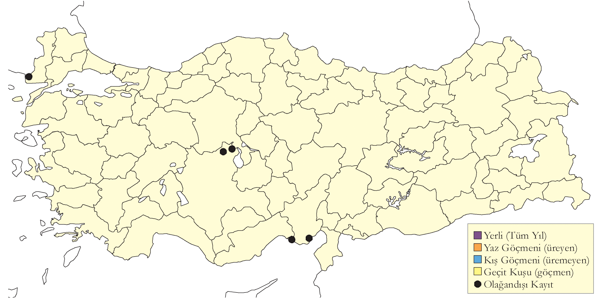
(harita güncellenecektir)
Üreme
Türkiye’de yuvalamaz. Asıl üreme alanı Orta ve Doğu Sibirya ve Amerika tundra kuşağıdır. Kışlama alanı Avustralya, Yeni Zelanda ve Güney Amerika’dır.
Alttürler ve Sınıflandırma
Monotipik bir türdür.